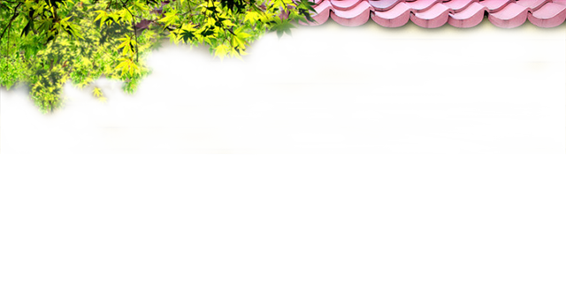
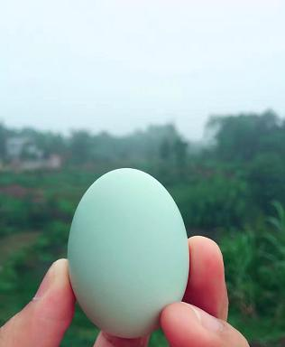

y
泸州泳余生态农庄
ong yu sheng tai


\ 新闻中心

下蛋了，下蛋了，下蛋了，重要的事情说三遍
2016-11-06

泳余生态农庄下蛋了，农庄引进的五黑鸡下蛋了。五黑鸡又名明代黑毛乌骨鸡，是我国稀有珍禽。目前，在江西最为常见，现有1300多年的养殖历史。外型具有黑冠、 黑羽、黑皮、黑肉、黑骨的特性，故名为五黑鸡；内含丰富的黑色素、 氨基酸和黑色胶体，被谓“中国黑宝”、 “鸡中珍品”和“药食兼用型的黑色营养保健食品”之称，受到历代医药家的关注和重视。 据明代李时珍《本草纲目》中的历史记载：“五黑鸡对慢性营养不良型水肿、肝炎、胃炎、十二指肠溃疡、宫颈炎、赤白带、产后虚弱、 风湿性关节炎、哮喘及脑神经痛等疾病有显著疗效。此鸡所产的绿蛋并非色素添加剂的影响，属纯天然，蛋白浓厚，蛋黄呈桔黄色，含有大量的卵磷脂、维生素和微量元素。想试试吗？绿壳鸡蛋配羊奶，绝佳的营养餐哦。现在关注我们的公众号，转发朋友圈，我们即刻免费送上门（生态绿壳鸡蛋10枚）。本活动仅限订奶客户。转发朋友圈后记得截图给我们客服哦。

服务热线：9999-123456
Copyright @ liergou.vip
All Rrghts Reserved.
技术支持 二狗工作室